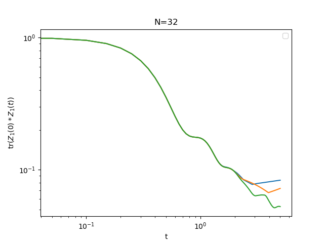

Time evolution
Time evolution with PauliStrings.jl is done in the Heisenberg picture. The method is commonly referred to as sparse Pauli dynamics, Pauli paths simulation, Pauli propagation or Pauli backpropagation.
The advantage of working with Pauli strings is that noisy systems can be efficiently simulated in this representation (Schuster 2024). Depolarizing noise makes long strings decay, so we can make the simulations tractable by combining noise with truncation.
Let's time evolve operator $Z_1$ in the chaotic spin chain
\[H = \sum_i X_i X_{i+1}-1.05 Z_i +h_X X_i.\]
First we construct the Hamiltonian:
using PauliStrings
import PauliStrings as psfunction chaotic_chain(N::Int)
H = ps.Operator(N)
# XX interactions
for j in 1:(N - 1)
H += "X",j,"X",j+1
end
H += "X",1,"X",N # close the chain
# fields
for j in 1:N
H += -1.05,"Z",j
H += 0.5,"X",j
end
return H
endWe initialize a Hamiltonian and the $Z_1$ operator on a 32 spins system.
N = 32 # system size
H = chaotic_chain(N) # Hamiltonian
O = ps.Operator(N) # operator to time evolve
O += "Z", 1 # Z on site 1Now we write a function that will time evolve operator O under Hamiltonian H and return some observable. Here we are interested in recording the correlator
\[S(t) = \frac{1}{2^N} \text{Tr} [Z_1(t)Z_1(0)].\]
We will time evolve O by integrating Von Neuman's equation $i \frac{dO}{dt}=-[H,O]$ with Runge-Kutta (rk4). At each time step we do 3 things :
- Perform a
rk4step add_noisethat makes long strings decaytrimO by keeping only M strings with the largest weight
# heisenberg evolution of the operator O using rk4
# return tr(O(0)*O(t))/tr(O(t)^2)
# M is the number of strings to keep at each step
# noise is the amplitude of depolarizing noise
using ProgressBars
function evolve(H, O, M, times, noise)
echo = []
O0 = deepcopy(O)
dt = times[2]-times[1]
for t in ProgressBar(times)
push!(echo, ps.trace(O*ps.dagger(O0))/ps.trace(O0*O0))
# perform one step of rk4, keep only M strings, do not discard O0
O = ps.rk4(H, O, dt; heisenberg=true, M=M, keep=O0)
# add depolarizing oise
O = ps.add_noise(O, noise*dt)
# keep the M strings with the largest weight. Do not discard O0
O = ps.trim(O, M; keep=O0)
end
return real.(echo)
endNow we can actually time evolve O for different trim values and plot the result:
# time evolve O for different trim values
times = range(0, stop=5, step=0.05)
noise = 0.01
for trim in (10,12,14)
S = evolve(H, O, 2^trim, times, noise)
loglog(times, S) #plot S(t)
end
legend()
title("N=$N")
xlabel("t")
ylabel(L"tr$(Z_1(0)*Z_1(t))$")
savefig("time_evolve_example.png")
show()